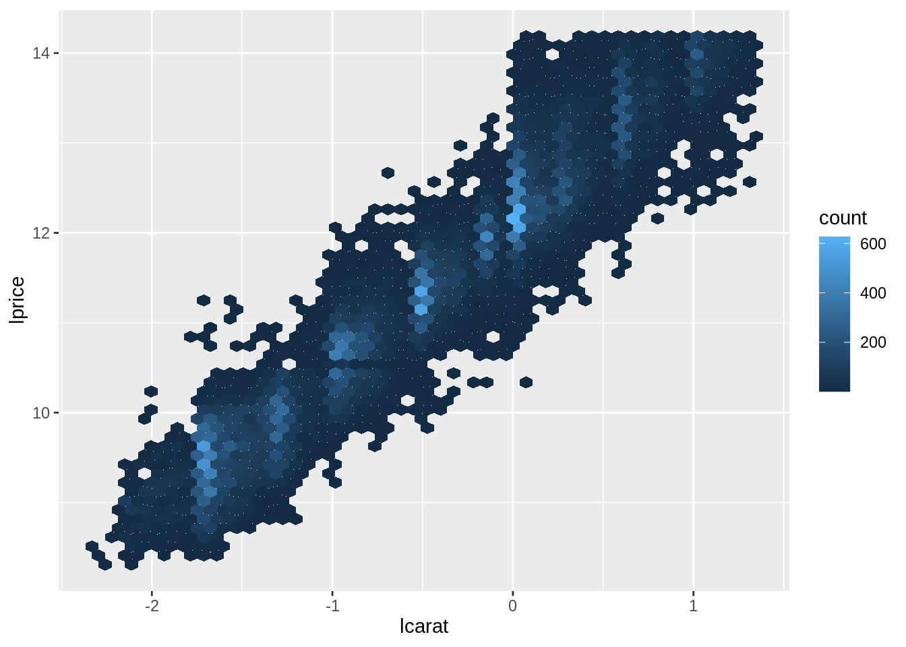
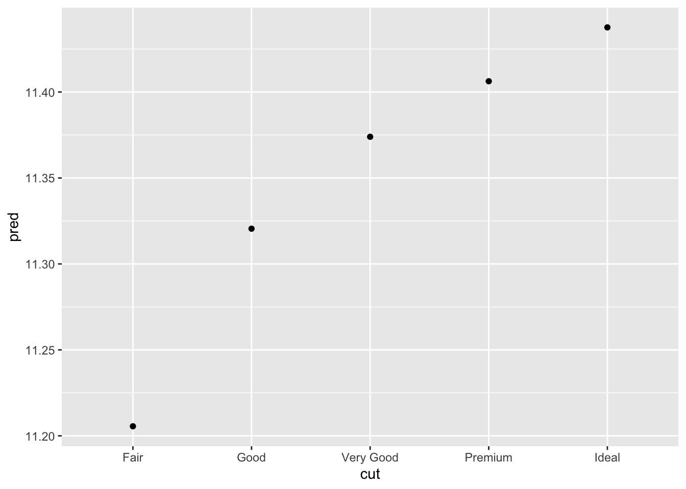
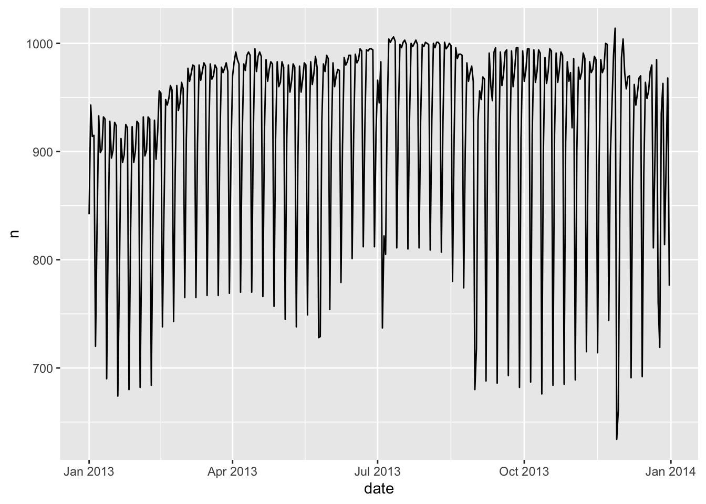
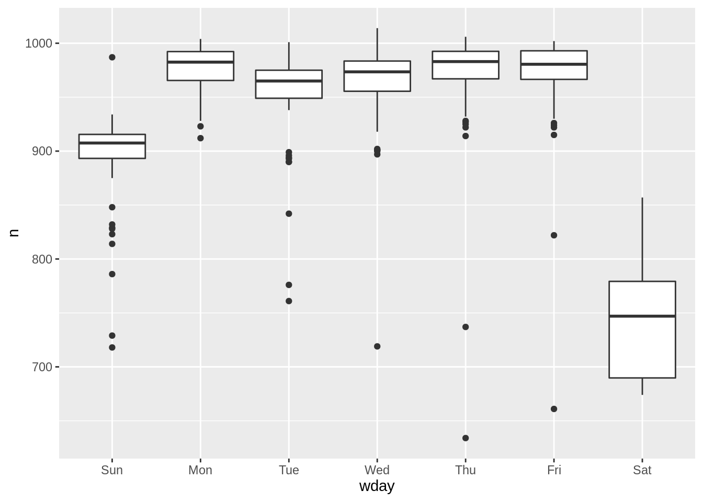
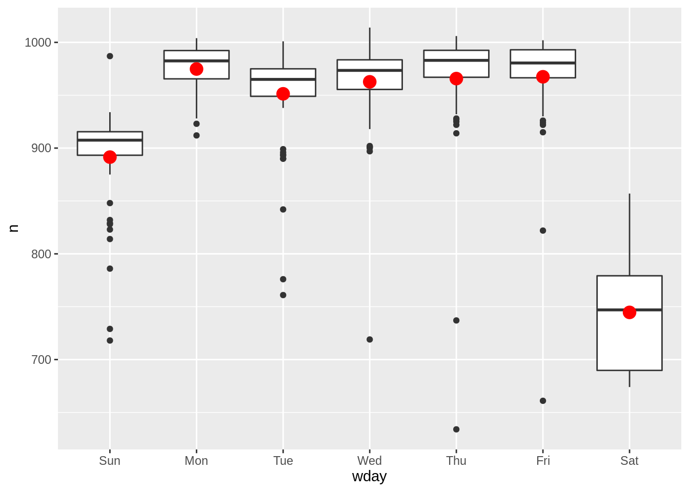
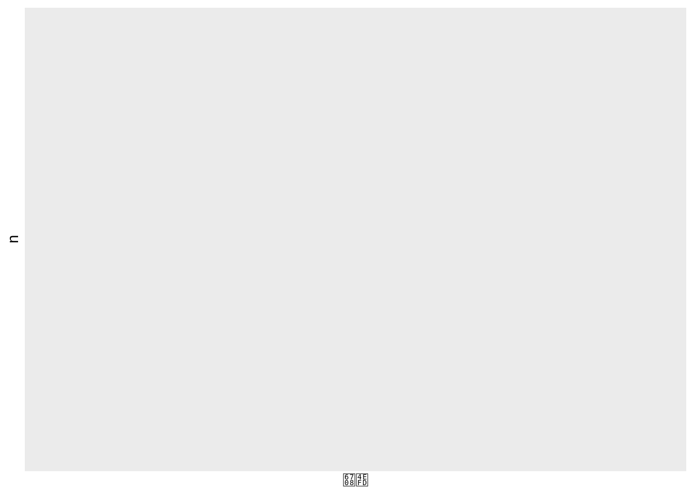
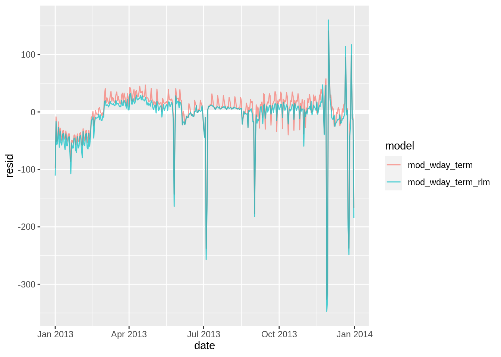

Chapter 17 Model building
上一章我们侧重于模拟数据集。本章将重点介绍真实数据，以及如何构建模型以便理解数据。我们可以将数据划分为模式和残差模型。注意模型建立有时不尽人意，有时建立得很好但你不知道为什么。
如果你遇到了任何困惑 —— 请不要畏惧重新开始！换个全新思路可能对你非常有用。
library(tidyverse)
library(modelr)
options(na.action = na.warn)
library(nycflights13)
library(lubridate)17.1 分析 diamonds 品质与价格反常的原因
还记得我们之前研究的奇怪现象吗？品质越差的钻石，价格越高。不只是质量，在颜色、纯净度方面都是这样表现的：
ggplot(diamonds, aes(cut, price)) +
geom_boxplot()%20with%20diamonds-1.png)
ggplot(diamonds, aes(color, price)) +
geom_boxplot()%20with%20diamonds-2.png)
ggplot(diamonds, aes(clarity, price)) +
geom_boxplot()%20with%20diamonds-3.png)
注意最差的钻石颜色是 J（微黄色），最差的纯净度是 I1（肉眼可见的杂物）。
17.1.1 重量与价格
ggplot(diamonds, aes(carat, price)) +
geom_hex(bins = 50)%20with%20diamonds-1.png)
我们决定对数据进行过滤处理：
diamonds_new <- diamonds %>%
filter(carat <= 2.5) %>% # 质量小于 2.5
mutate(lprice = log2(price), lcarat = log2(carat)) # 对价格和质量取对数（基数为 2 的对数）
ggplot(diamonds_new, aes(lcarat, lprice)) +
geom_hex(bins = 50)
通过转化，它们的关系变成了明显漂亮的线性化！我们试着创建模型去拟合它：
mod_diamonds <- lm(lprice ~ lcarat, data = diamonds_new)
grid <- diamonds_new %>%
data_grid(carat = seq_range(carat, 20)) %>% # 创建矩阵
mutate(lcarat = log2(carat)) %>% # 矩阵生成的 carat 也需要取对数
add_predictions(mod_diamonds, "lprice") %>% # 预测
mutate(price = 2^lprice) # 将价格还原回去最后绘制数据图：
ggplot(diamonds_new, aes(carat, price)) +
geom_hex(bins = 50) +
geom_line(data = grid, colour = "red", size = 1)%20with%20diamonds_new-1.png)
这告诉我们一些关于这些数据的有趣信息：如果我们相信我们创造的模型，那么大钻石比预期的要便宜得多。
我们来分析残差的数据：
diamonds_new <- diamonds_new %>%
add_residuals(mod_diamonds, "lresid") # 注意这里分析得到的数据是取过对数的
ggplot(diamonds_new, aes(lcarat, lresid)) +
geom_hex(bins = 50)
我们决定舍弃掉价格变量，因为 lrisid 变量可能有其他参考价值：
ggplot(diamonds_new, aes(cut, lresid)) +
geom_boxplot()%20with%20cut%20&%20color%20&%20clarity%20with%20diamonds_new-1.png)
ggplot(diamonds_new, aes(color, lresid)) +
geom_boxplot()%20with%20cut%20&%20color%20&%20clarity%20with%20diamonds_new-2.png)
ggplot(diamonds_new, aes(clarity, lresid)) +
geom_boxplot()%20with%20cut%20&%20color%20&%20clarity%20with%20diamonds_new-3.png)
现在我们看到了所期望的结果：钻石品质越高，其相对价格也越高。
17.1.2 推广出更复杂的模型
既然价格对数与质量对数、颜色、质量和品质都有重要关系，那我们不妨把它们都加入模型：
mod_diamond_new <- lm(
lprice ~ lcarat + color + cut + clarity,
data = diamonds_new
)
grid <- diamonds_new %>%
# 用 data_grid() 来创建数据越来越麻烦了。
# 好在我们有一个叫 “.model” 的参数帮我们完成：
data_grid(cut, .model = mod_diamond_new) %>%
add_predictions(mod_diamond_new)
grid
#> # A tibble: 5 x 5
#> cut lcarat color clarity pred
#> <ord> <dbl> <chr> <chr> <dbl>
#> 1 Fair -0.515 G VS2 11.2
#> 2 Good -0.515 G VS2 11.3
#> 3 Very Good -0.515 G VS2 11.4
#> 4 Premium -0.515 G VS2 11.4
#> 5 Ideal -0.515 G VS2 11.4
ggplot(grid, aes(cut, pred)) +
geom_point()
如果模型需要我们未显式提供的变量，data_grid() 将自动使用 “典型值” 填充它们。对于连续变量，它使用中位数，分类变量使用最常见的值（如果存在并列，则使用或值）。
diamonds_new <- diamonds_new %>%
# 新的 lrisid 添加了颜色、质量和品质关系
add_residuals(mod_diamond_new, "lresid_new")
ggplot(diamonds_new, aes(lcarat, lresid_new)) +
geom_hex(bins = 50)%20with%20lresid_new-1.png)
我们会发现有一些钻石数据的残差相当大 —— 尤其是因为取对数的关系，残差为 2 表示钻石的价格是我们预期的 4 倍。单独查看异常值通常很有用：
diamonds_new %>%
filter(abs(lresid_new) > 1) %>% # 残差绝对值大于 1
add_predictions(mod_diamond_new) %>% # 对这些数据生成期望值对数
mutate(pred = round(2^pred)) %>% # 对期望值反对数并取整
select(price, pred, carat:table, x:z) %>% # 重新选取需要的数据
arrange(price) # 按照价格排列
#> # A tibble: 16 x 11
#> price pred carat cut color clarity depth table x y z
#> <int> <dbl> <dbl> <ord> <ord> <ord> <dbl> <dbl> <dbl> <dbl> <dbl>
#> 1 1013 264 0.25 Fair F SI2 54.4 64 4.3 4.23 2.32
#> 2 1186 284 0.25 Premium G SI2 59 60 5.33 5.28 3.12
#> 3 1186 284 0.25 Premium G SI2 58.8 60 5.33 5.28 3.12
#> 4 1262 2644 1.03 Fair E I1 78.2 54 5.72 5.59 4.42
#> 5 1415 639 0.35 Fair G VS2 65.9 54 5.57 5.53 3.66
#> 6 1415 639 0.35 Fair G VS2 65.9 54 5.57 5.53 3.66
#> 7 1715 576 0.32 Fair F VS2 59.6 60 4.42 4.34 2.61
#> 8 1776 412 0.29 Fair F SI1 55.8 60 4.48 4.41 2.48
#> 9 2160 314 0.34 Fair F I1 55.8 62 4.72 4.6 2.6
#> 10 2366 774 0.3 Very Good D VVS2 60.6 58 4.33 4.35 2.63
#> 11 3360 1373 0.51 Premium F SI1 62.7 62 5.09 4.96 3.15
#> 12 3807 1540 0.61 Good F SI2 62.5 65 5.36 5.29 3.33
#> 13 3920 1705 0.51 Fair F VVS2 65.4 60 4.98 4.9 3.23
#> 14 4368 1705 0.51 Fair F VVS2 60.7 66 5.21 5.11 3.13
#> 15 10011 4048 1.01 Fair D SI2 64.6 58 6.25 6.2 4.02
#> 16 10470 23622 2.46 Premium E SI2 59.7 59 8.82 8.76 5.25似乎没有什么出人意料的数据，但可能值得花时间考虑，这是否表明我们的模型存在问题，或者数据中存在错误。
17.2 分析 flights 每日航班数量变化因素
按照天来看，这是一个包含 365 项的简单数据集：
daily <- flights %>%
# 同理我们还有 make_datetime，作用是将日期各因素拼接，并返回 “日期” 格式数据
mutate(date = make_date(year, month, day)) %>%
group_by(date) %>%
summarise(n = n())
daily
#> # A tibble: 365 x 2
#> date n
#> <date> <int>
#> 1 2013-01-01 842
#> 2 2013-01-02 943
#> 3 2013-01-03 914
#> 4 2013-01-04 915
#> 5 2013-01-05 720
#> 6 2013-01-06 832
#> 7 2013-01-07 933
#> 8 2013-01-08 899
#> 9 2013-01-09 902
#> 10 2013-01-10 932
#> # ... with 355 more rows
ggplot(daily, aes(date, n)) +
geom_line()
不难发现，航班书总是呈现出周期性变化。我们接下来按星期几划分。
17.2.1 星期几对航班的影响
daily <- daily %>%
# 对指定的日期来返回星期几（label 配置项为是否要用当地语言表示,默认 FALSE 用数字表示）
mutate(wday = wday(date, label = TRUE))
ggplot(daily, aes(wday, n)) + # 注意这里默认周末排最前
geom_boxplot()
双休日的航班相对要少些，因为大多数旅行都是商务旅行。这种影响在周六尤为明显：你有时可能会在周日离开去参加周一上午的会议，但你很少在周六离开，因为你更愿意在家和家人们在一起。
消除这种影响最简单的方法是使用模型矫正。首先，我们拟合模型，并将其预测覆盖在原始数据上来可视化：
mod_wday <- lm(n ~ wday, data = daily)
grid <- daily %>%
data_grid(wday) %>%
add_predictions(mod_wday, "n")
ggplot(daily, aes(wday, n)) +
geom_boxplot() +
geom_point(data = grid, colour = "red", size = 4)
这样，我们就把问题转化为分析残差：
daily <- daily %>%
add_residuals(mod_wday)
daily %>%
ggplot(aes(date, resid)) +
geom_ref_line(h = 0) + # 基线调整到 0 而不是最小
geom_line()
现在，通过星期几预估模型，我们发现航班数量仍然明显偏离了预期航班数量。虽然现在我们已经消除了大部分大的每周效应，但我们仍然可以看到一些更微妙的变化：有没有一种可能，我是说可能，这个模型的变化不只是单纯的被星期几？
从6月份开始，我们的模型很是失败。为一周中的每一天绘制一条线，使原因更容易看到：
ggplot(daily, aes(date, resid, colour = wday)) +
geom_ref_line(h = 0) +
geom_line()
有些线条仍然在乱飞！尤其是周六的航班数量：夏季的航班比我们预期的要多，秋季的航班则少得多。之后我们会着重分析。
这里将偏离过大的 “异常” 数据单独取出仔细研究：
daily %>%
filter(resid < -100)
#> # A tibble: 11 x 4
#> date n wday resid
#> <date> <int> <ord> <dbl>
#> 1 2013-01-01 842 周二 -109.
#> 2 2013-01-20 786 周日 -105.
#> 3 2013-05-26 729 周日 -162.
#> 4 2013-07-04 737 周四 -229.
#> 5 2013-07-05 822 周五 -145.
#> 6 2013-09-01 718 周日 -173.
#> 7 2013-11-28 634 周四 -332.
#> 8 2013-11-29 661 周五 -306.
#> 9 2013-12-24 761 周二 -190.
#> 10 2013-12-25 719 周三 -244.
#> 11 2013-12-31 776 周二 -175.请注意这些日期并不是巧合。从美国公共假日角度来看，我们会发现这些数据包含元旦、美国独立日（7月4日）、感恩节和圣诞节。
而除上述个别突出的数据以外，也有一些整体性的趋势：
daily %>%
ggplot(aes(date, resid)) +
geom_ref_line(h = 0) +
geom_line(colour = "grey50") +
geom_smooth(se = FALSE, span = 0.20)
#> `geom_smooth()` using method = 'loess' and formula 'y ~ x'
冬季（12月至3月）的航班相对较少，而夏季（5月至9月）的航班明显更多。尽管我们只有一年的数据，没有更好地佐证这个观点。但我们可以通过思考获取潜在的解释。
17.2.2 季节性周六效应
之前我们发现仅周六在周预测模型对于全年数据中，出现明显偏差。这里专门提取进行研究：
daily %>%
filter(wday == "周六") %>%
# 如果是英语作为 R 的语言设置的话：filter(wday == "Sat") %>%
ggplot(aes(date, n)) +
geom_point() +
geom_line() +
# 对 x 轴的缩放比例进行调整，其中数据类型为 date
scale_x_date(
name = "月份", # 比例尺名称
date_breaks = "1 month", # 间隔为一个月
date_labels = "%b" # 指定展示规范为仅显示月
)
同样是周六，不同的周六反馈的数据差异巨大！很难不会引起怀疑 —— 这是由暑假引起的：
当地人们通常在夏天去度假，也不介意选择周六度假。选择这个时间段度假，很可能是因为孩子们正好在放暑假。所以我们有理由推测暑假是从6月初到8月下旬。 实际查询数据我们得到，该州在2013年的暑假安排是6月26日至9月9日。但为什么春季的周六航班比秋季多？调研得知计划秋天度假的家庭实在不太常见，因为感恩节和圣诞节假期真的已经足够长。
让我们创建一个大致包含三个学校学期的 “term” 变量，并用一个函数来验证我们的推论：
term <- function(date) {
# cut 会切割我们本有的数据集，break 确认切割点位
cut(date,
breaks = ymd(20130101, 20130605, 20130825, 20140101), # 创建日期向量
labels = c("spring", "summer", "fall") # 切割后类别的命名标签
)
}
# 通过切割获取学期标签
daily <- daily %>%
mutate(term = term(date))
daily %>%
filter(wday == "周六") %>%
ggplot(aes(date, n, colour = term)) +
geom_point(alpha = 1 / 3) +
geom_line() +
scale_x_date(name = "月份", date_breaks = "1 month", date_labels = "%b")
不同季节学期之间的断层非常明显！学生一旦处于暑假，周六出行度假的数量就会居高不下。
我们试着把这个规律推广到其他星期几：
daily %>%
ggplot(aes(wday, n, colour = term)) +
geom_boxplot()
每个星期几都呈现这样的趋势：春季数据多变（由于节日，春季开头与结尾差异较大）、夏季（数据）航班偏多。周六用于暑假度假的趋势也很明显。
既然同时存在两个因素，我们不妨建立两个模型进行对比：
mod_wday <- lm(n ~ wday, data = daily)
mod_wday_term <- lm(n ~ wday * term, data = daily)
daily %>%
gather_residuals(without_term = mod_wday, with_term = mod_wday_term) %>%
ggplot(aes(date, resid, colour = model)) +
geom_ref_line(h = 0) +
geom_line(alpha = 0.75)
其实这里就已经表现出来了，包含 term 的模型的预期效果明显优于不包含的。接下来我们将模型与实际数据对应上：
grid <- daily %>%
data_grid(wday, term) %>%
gather_predictions(
without_term = mod_wday,
with_term = mod_wday_term,
.pred = "n"
)
ggplot(daily, aes(wday, n)) +
geom_boxplot() +
geom_point(data = grid, colour = "red") +
facet_grid(term ~ model)%20with%20with_term%20&%20without_term%20&%20term-1.png)
我们的模型总是在走向一个我们所期望的 “寻常态”，但很不幸元数据有许多非常突出的异常值，以至于我们的预测值与理想值相去甚远。所以我们提出了新函数 MASS::rlm() 来合理处理异常值。
mod_wday_term_rlm <- MASS::rlm(n ~ wday * term, data = daily) # 用法与 lm() 真的很类似
daily %>%
gather_residuals(mod_wday_term_rlm, mod_wday_term) %>%
ggplot(aes(date, resid)) +
geom_hline(yintercept = 0, size = 2, colour = "white") +
geom_line(aes(colour = model), alpha = 0.7)
新的模型可能更容易看到长期趋势和异常值。
17.2.3 针对一年中的不同时间点
我们可以使用一个更为灵活的模型，用来捕获我们感兴趣的内容。一个简单的线性趋势是不够的，我们可以尝试使用自然样条来拟合全年的平滑曲线：
library(splines) # 便于使用自然样条函数 ns()
mod <- MASS::rlm(n ~ wday * ns(date, 5), data = daily) # 最高 5 次方
daily %>%
data_grid(
wday, # 针对列 wday 生成新的无重复数据的基础数据列
date = seq_range(date, n = 20) # 将 date 范围等距切割出 20 个点位
) %>%
add_predictions(mod) %>%
ggplot(aes(date, pred, colour = wday)) +
geom_line() +
geom_point()%20with%20daily-1.png)
17.3 关于计算变量
在我们试验多个模型和可视化效果时，最好将变量的创建捆绑到一个函数中，如：
compute_vars <- function(data) {
data %>%
mutate(
term = term(date),
wday = wday(date, label = TRUE)
)
}
# 或者将转换直接放在模型公式中：
wday2 <- function(x) wday(x, label = TRUE)
mod3 <- lm(n ~ wday2(date) * term(date), data = daily)这两种方法都是合理的。但如果要画图或检查变量，显式转换可能更好。但请不要随意使用返回多个列的转换（如样条曲线）。
17.4 有关模型的更多信息
我们只是触及了建模表层的一些东西，也获得了一些简单通用的工具，用于改善自己的数据分析。 从简单开始是可以的！但正如所看到的那样，即使是非常简单的模型，也会对你梳理变量之间相互作用的能力产生巨大的影响。 下面有一些很棒的书籍；建模确实值得一本书，所以我强烈建议你至少读其中的任意一本：
Statistical Modeling: A Fresh Approach by Danny Kaplan
👉 书本官网（已挂，但保有 Archive 历史版本）
👉 在线阅读
本书温和地（。？）介绍了建模，我们可以在其中并行构建直觉，数学工具和一些关于 R 的小技巧。同时这本书取代了传统的 “统计学导论” 课程，提供了一个全新的与数据科学相关的课程。
An Introduction to Statistical Learning by Gareth James, Daniela Witten, Trevor Hastie
👉 教学资源文件下载
本书介绍了一系列现代建模技术，统称为统计学习。 要更深入地了解模型背后的数学原理，则请阅读： The Elements of Statistical Learning by Trevor Hastie, Robert Tibshirani, and Jerome Friedman（电子版下载：一代版本 | 二代版本）
Applied Predictive Modeling by Max Kuhn and Kjell Johnson
👉 书本官网
本书更多是配套于 caret 包，为应对现实生活中的预测建模挑战提供了相当丰富的实用工具。
一个可能对你有用的下载集合：Trevor Hastie - Publications (su.domains)